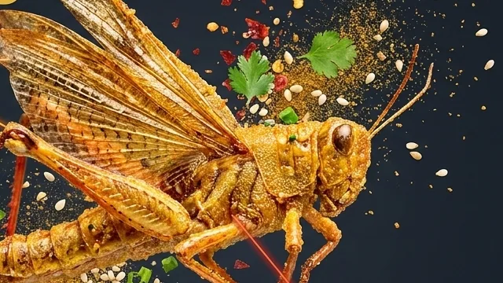

?
Next Chapter
The Insect Atlas
Silkworm pupa, cicada nymphs, bamboo worms, and every other edible insect Chinese cuisine has been cooking for centuries — mapped, explained, and eaten properly.
Fried Grasshoppers Guide
Start with the quick explanation, follow the full golden street crunch from field to fryer, or go full food-craft mode.

Start Here
The friendly overview: what Fried Grasshoppers are, why they are one of China's most iconic summer street snacks, which rumors are wrong, and how to eat your first one.
Visual Story
A scrollable journey from field to night market: the summer harvest, the five-step preparation, the night market tasting board, the northern roots, and the global crunch.

Deep Dive
The harvesting window, the 48-hour purge, the light marinade, the 2–3 minute flash-fry, the seasoning science, and the texture that no potato chip has ever matched.
Next Chapter
Silkworm pupa, cicada nymphs, bamboo worms, and every other edible insect Chinese cuisine has been cooking for centuries — mapped, explained, and eaten properly.